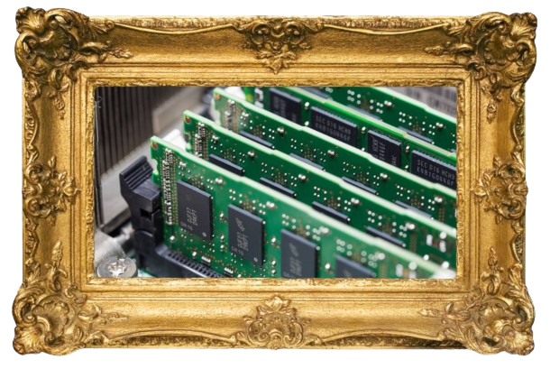

Werkgeheugen

Het werkgeheugen, ook wel RAM genoemd, is de tijdelijke opslagplaats voor gegevens waar de CPU direct toegang tot heeft. (kortetermijn-geheugen)
- RAM (Random Access Memory): Tijdelijke opslag waar gegevens worden bewaard zolang de computer aan staat. (Computer gaat uit, -> Ram leeg)
- Cache: Zeer snel geheugen dicht bij de CPU om snelle toegang tot veelgebruikte gegevens mogelijk te maken.
- ROM (Read Only Memory): Permanent geheugen waarin belangrijke informatie voor de computer is opgeslagen. (Kan niet aangepast of gewist worden)